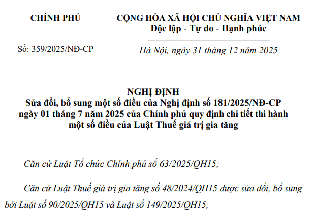

Ngày 31 tháng 12 năm 2025, Chính phủ ban hành Nghị định 359/2025/NĐ-CP sửa đổi, bổ sung một số điều của Nghị định số 181/2025/NĐ-CP ngày 01 tháng 7 năm 2025 của Chính phủ quy định chi tiết thi hành một số điều của Luật Thuế giá trị gia tăng
Nghị định 359/2025/NĐ-CP có hiệu lực thi hành từ ngày 01/01/2026
Bãi bỏ một điều kiện hoàn thuế giá trị gia tăng từ ngày 01/01/2026
Cụ thể, Nghị định 359/2025/NĐ-CP bãi bỏ khoản 3 Điều 37 và khoản 3 Điều 39 Nghị định 181/2025/NĐ-CP . Trong đó, khoản 3 Điều 37 Nghị định 181/2025/NĐ-CP quy định điều kiện hoàn thuế giá trị gia tăng với cơ sở kinh doanh về việc người bán đã kê khai, nộp thuế giá trị gia tăng theo quy định đối với hóa đơn đã xuất cho cơ sở kinh doanh đề nghị hoàn thuế được xác định như sau:
- Tại thời điểm cơ sở kinh doanh nộp hồ sơ hoàn thuế, người bán đã nộp hồ sơ khai thuế giá trị gia tăng theo quy định và không còn nợ tiền thuế giá trị gia tăng của kỳ tính thuế tương ứng với kỳ tính thuế thuộc kỳ hoàn thuế của cơ sở kinh doanh đề nghị hoàn thuế.
- Cơ quan quản lý thuế tại thời điểm cơ sở kinh doanh nộp hồ sơ hoàn thuế trên cơ sở kết quả xử lý của hệ thống công nghệ thông tin tự động để xác định người bán đã kê khai, nộp thuế giá trị gia tăng theo quy định.
- Trường hợp xác định người bán chưa nộp đầy đủ hồ sơ khai thuế giá trị gia tăng của kỳ tính thuế tương ứng với kỳ tính thuế thuộc kỳ hoàn thuế của cơ sở kinh doanh (bao gồm cả trường hợp chưa đến thời hạn nộp hồ sơ khai thuế) hoặc còn nợ tiền thuế giá trị gia tăng của kỳ tính thuế tương ứng với kỳ tính thuế thuộc kỳ hoàn thuế thì cơ sở kinh doanh không được hoàn thuế đối với các hóa đơn tương ứng với kỳ tính thuế người bán chưa nộp đầy đủ hồ sơ khai thuế giá trị gia tăng hoặc còn nợ tiền thuế giá trị gia tăng.
Cơ sở kinh doanh thuộc trường hợp hoàn thuế quy định tại Điều 15 Luật Thuế giá trị gia tăng đã nộp hồ sơ hoàn thuế giá trị gia tăng và đã được cơ quan quản lý thuế tiếp nhận trước ngày 01/01/2026 nhưng cơ quan quản lý thuế chưa ban hành Quyết định hoàn thuế hoặc Quyết định hoàn thuế kiêm bù trừ thu ngân sách nhà nước thì không phải đáp ứng điều kiện người bán đã kê khai, nộp thuế giá trị gia tăng theo quy định đối với hóa đơn đã xuất cho cơ sở kinh doanh đề nghị hoàn thuế.
Nội dung của Nghị định 359/2025/NĐ-CP như sau:
NGHỊ ĐỊNH
Căn cứ Luật Tổ chức Chính phủ số 63/2025/QH15;SỬA ĐỔI, BỔ SUNG MỘT SỐ ĐIỀU CỦA NGHỊ ĐỊNH SỐ 181/2025/NĐ-CP NGÀY 01 THÁNG 7 NĂM 2025 CỦA CHÍNH PHỦ QUY ĐỊNH CHI TIẾT THI HÀNH MỘT SỐ ĐIỀU CỦA LUẬT THUẾ GIÁ TRỊ GIA TĂNG Căn cứ Luật Thuế giá trị gia tăng số 48/2024/QH15 được sửa đổi, bổ sung bởi Luật số 90/2025/QH15 và Luật số 149/2025/QH15; Theo đề nghị của Bộ trưởng Bộ Tài chính; Chính phủ ban hành Nghị định sửa đổi, bổ sung một số điều của Nghị định số 181/2025/NĐ-CP ngày 01 tháng 7 năm 2025 của Chính phủ quy định chi tiết thi hành một số điều của Luật Thuế giá trị gia tăng. Điều 1. Sửa đổi, bổ sung một số điều của Nghị định số 181/2025/NĐ-CP ngày 01 tháng 7 năm 2025 của Chính phủ quy định chi tiết thi hành một số điều của Luật Thuế giá trị gia tăng 1. Bổ sung khoản 1b sau khoản 1 Điều 4 như sau: “1b. Doanh nghiệp, hợp tác xã, liên hiệp hợp tác xã mua sản phẩm cây trồng, rừng trồng, chăn nuôi, thủy sản nuôi trồng, đánh bắt chưa chế biến thành các sản phẩm khác hoặc chỉ qua sơ chế thông thường bán cho doanh nghiệp, hợp tác xã, liên hiệp hợp tác xã khác thì không phải kê khai, tính nộp thuế giá trị gia tăng nhưng được khấu trừ thuế giá trị gia tăng đầu vào. Trong đó: a) Doanh nghiệp, hợp tác xã, liên hiệp hợp tác xã nộp thuế giá trị gia tăng theo phương pháp khấu trừ thuế bán sản phẩm cây trồng, rừng trồng, chăn nuôi, thủy sản nuôi trồng, đánh bắt chưa chế biến thành các sản phẩm khác hoặc chỉ qua sơ chế thông thường cho doanh nghiệp, hợp tác xã, liên hiệp hợp tác xã khác ở khâu kinh doanh thương mại thì không phải kê khai, tính nộp thuế giá trị gia tăng. b) Trường hợp doanh nghiệp, hợp tác xã, liên hiệp hợp tác xã nộp thuế giá trị gia tăng theo phương pháp khấu trừ thuế bán sản phẩm cây trồng, rừng trồng, chăn nuôi, thủy sản nuôi trồng, đánh bắt chưa chế biến thành các sản phẩm khác hoặc chỉ qua sơ chế thông thường cho các đối tượng như hộ, cá nhân sản xuất, kinh doanh và các tổ chức, cá nhân khác thì phải tính thuế giá trị gia tăng theo mức thuế suất 5% quy định tại khoản 3 Điều 19 Nghị định này. c) Hộ, cá nhân sản xuất, kinh doanh, doanh nghiệp, hợp tác xã, liên hiệp hợp tác xã và tổ chức kinh tế khác nộp thuế giá trị gia tăng theo phương pháp tính trực tiếp khi bán sản phẩm cây trồng, rừng trồng, chăn nuôi, thủy sản nuôi trồng, đánh bắt chưa chế biến thành các sản phẩm khác hoặc chỉ qua sơ chế thông thường ở khâu kinh doanh thương mại thì tính thuế giá trị gia tăng phải nộp theo doanh thu bằng 1% (tỷ lệ %) nhân với doanh thu.” 2. Bãi bỏ khoản 3 Điều 37 và khoản 3 Điều 39. Điều 2. Điều khoản thi hành 1. Nghị định này có hiệu lực thi hành từ ngày 01 tháng 01 năm 2026. 2. Cơ sở kinh doanh thuộc trường hợp hoàn thuế quy định tại Điều 15 Luật Thuế giá trị gia tăng đã nộp hồ sơ hoàn thuế giá trị gia tăng và đã được cơ quan quản lý thuế tiếp nhận trước ngày 01 tháng 01 năm 2026 nhưng cơ quan quản lý thuế chưa ban hành Quyết định hoàn thuế hoặc Quyết định hoàn thuế kiêm bù trừ thu ngân sách nhà nước thì không phải đáp ứng điều kiện người bán đã kê khai, nộp thuế giá trị gia tăng theo quy định đối với hóa đơn đã xuất cho cơ sở kinh doanh đề nghị hoàn thuế. 3. Các Bộ trưởng, Thủ trưởng cơ quan ngang bộ, Thủ trưởng cơ quan thuộc Chính phủ, Chủ tịch Ủy ban nhân dân các tỉnh, thành phố trực thuộc trung ương và các tổ chức, cá nhân có liên quan chịu trách nhiệm thi hành Nghị định này.
|
